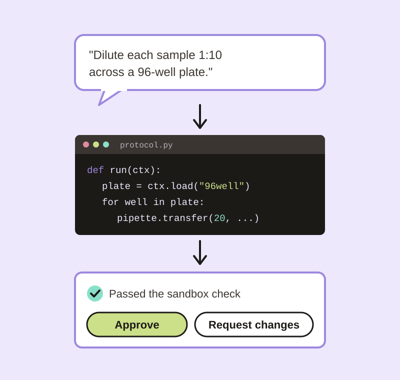

Gladys
An AI lab automation engineer that turns a scientist's request into a robot protocol a human signs off on. Currently being built.

Overview
Lab robots are fast, but getting an experiment onto one is slow. Someone has to translate what the scientist wants into a protocol script, check it won't crash the deck, and run it. Gladys is meant to do that translation: a scientist describes an experiment in plain language, Gladys writes the robot protocol, checks it in a simulator, and hands it to a person to approve before anything moves.
It's an orchestration layer that sits between the people and the instruments, not another LIMS or electronic lab notebook. The first robot it targets is the Opentrons liquid handler.
Where It's At
The foundations are done. The part that writes protocols and the part that talks to a robot are next.
- Done: the run record and its lifecycle, Postgres storage, protocol file storage, config, logging, and tests and CI that enforce how the pieces connect.
- Next: the agent that writes protocols, the Opentrons simulator check, and evals that measure how often it gets them right.
- Later: an API, a review screen for approving protocols, and a second agent that reviews the first one's work.
Design Choices
- A human approves the exact protocol. Approval is tied to the protocol file's fingerprint (a hash), so if a single character changes after sign-off, the approval no longer counts.
- Nothing gets rewritten. Each run keeps an append-only history of what was asked, what was generated, who approved it and what happened, so a result can always be traced back to its request.
- The core doesn't depend on the tools. The lab logic is plain Python. Databases, storage and robots plug in around it, so supporting a new robot shouldn't mean touching the rules.
Links